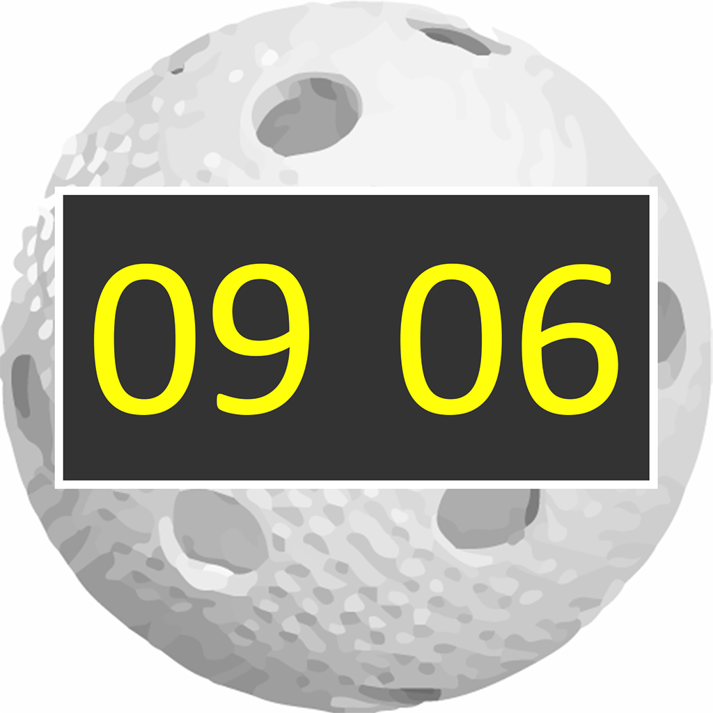
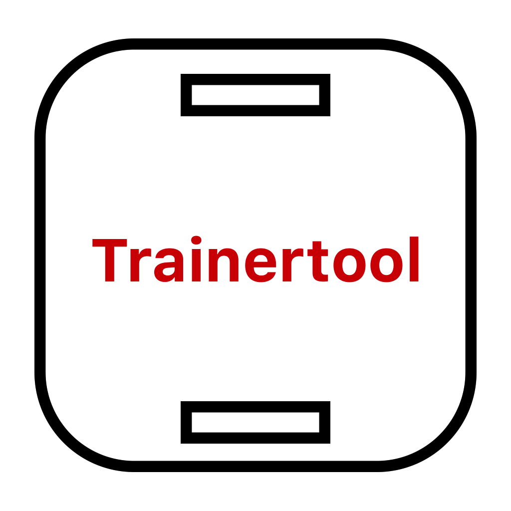
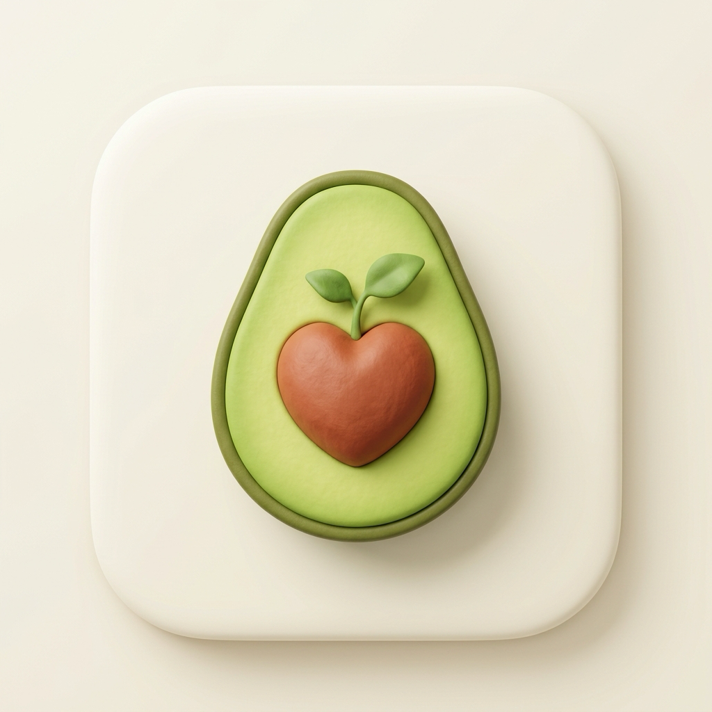

Leistungsstarke Cross-Plattform-Anwendungen für Floorball-Sport, Trainingsplanung und veganen Lifestyle.

Das professionelle digitale Spielsekretariat nach den offiziellen Floorball-Spielregeln 2026 (SPRGK / IFF). Mit Zehntelsekunden-Genauigkeit, aufsteigender Hallenanzeige (Regel 201.1), flexiblen Spielformaten (Groß-/Kleinfeld), Uhrenanpassung, 2' / 2'+2' / 10' Strafen-Korrektur, Penaltyschießen (Shootout), Betreuer-Erfassung, Multi-Display-Scoreboard (HDMI/AirPlay) und offiziellem Floorball-Deutschland PDF-Spielberichtsbogen.

Die professionelle App für Floorball-Trainer und Übungsleiter. Strukturieren Sie Trainingseinheiten, verwalten Sie Übungen mit Taktikskizzen und Fotos, markieren Sie Favoriten und generieren Sie druckfertige PDF-Trainingspläne mit direktem E-Mail-Versand.

Die intelligente Rezept- und Koch-App für die pflanzliche Küche. Mit 3-Stufen Cloud-Tresor (Privat 🔒, Geteilt 👥, Community 🌍), automatischem Web-Rezept-Import (schema.org JSON-LD), dynamischem Portionen-Skalierer mit echten Bruchzahlen (½ TL, 1 ¼ Tassen), veganer B12-/Mineralstoff-Nährwertanalyse, ablenkungsfreiem Koch-Modus mit Küchentimern und Supermarkt-Einkaufsliste.
Die bewährte iOS-App für iPhone & iPad zum Messen von Spielzeiten, Strafzeiten und Spielständen inklusive AirPlay-Hallenanzeige. Über viele Saisons hinweg bei unzähligen Turnieren und Ligaspielen erfolgreich im Einsatz.